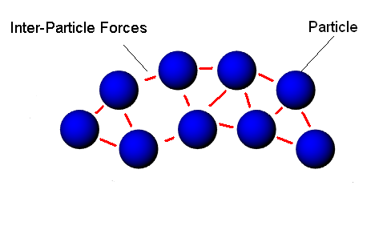

Fluids

Fluids allow the simulation of liquids and gases using a particle
system and emitters. A tap or fresh
water spring introduce fluid particles into a scene and allow
the user to control the manner in which they appear (e.g.,
the emission rate, the initial velocity of the fluid particles,
the deviation (randomness) of the emission angle, etc.).
There are two ways to create fluid particles - either from a previously created layout recreated from a snapshot, or from implicit functions.
The fluid's API also allows for drains, used to remove
fluids from a scene. For example, an
emitter could be placed at the top of a waterfall with a drain at the bottom.
Another option for removing fluids is to set the lifetime counter for each individual particle. Designed with this setting upon creation, it counts down to zero, at which point it is removed from the simulation. This is especially useful for simulated gaseous effects
where the lifetime, in addition to fading the graphical version of the
particle, gives the impression that the gas is dissipating.
See Hardware Scenes for
details on PhysX hardware support for
fluids.

Fluid State
Each fluid has a set of properties which affect its behavior, such as the stiffness of the fluid and its viscosity.
The most important properties are listed below:
- maxParticles - maximum number of particles used to simulate the fluid.
- restParticlesPerMeter - particle per linear meter resolution, measured when the fluid is in its rest
state (relaxed).
- restDensity - target density for the fluid (water is
about 1000).
- kernelRadiusMultiplier - sphere radius of influence for
particle interaction.
- packetSizeMultiplier - parallelization of the fluid.
- stiffness - stiffness of the particle interaction
related to the pressure.
- viscosity - defines the fluid's
viscous behavior.
- damping - velocity damping constant,
globally applied to each particle.
- externalAcceleration - acceleration, applied to all
particles at all timesteps.
- simulationMethod - defines whether or not particle
interactions are considered in the
simulation.
For more properties related to interaction with rigid bodies, go to Fluid Interaction with
Rigid Bodies. For more information on particle interaction, see Fluid Particle Interaction.
Particle State
Each particle is associated with an individual state described below:
- Position - position
of the particle.
- Velocity - linear
velocity of the particle.
- Density - density of the fluid in the
region surrounding the particle, though the mass of
all particles in a fluid is fixed.
- Life - time the particles have left before dying (using the life counter, measured in seconds).
See Fluid Creation for how to set particle properties directly when they are
created. For more information on how to retrieve particle state when rendering, see Rendering Particles.
API Reference
Copyright © 2008 NVIDIA Corporation, 2701 San Tomas Expressway, Santa Clara, CA 95050 U.S.A. All rights reserved. www.nvidia.com